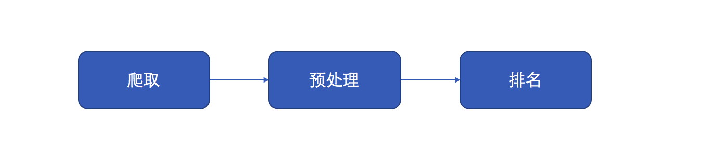
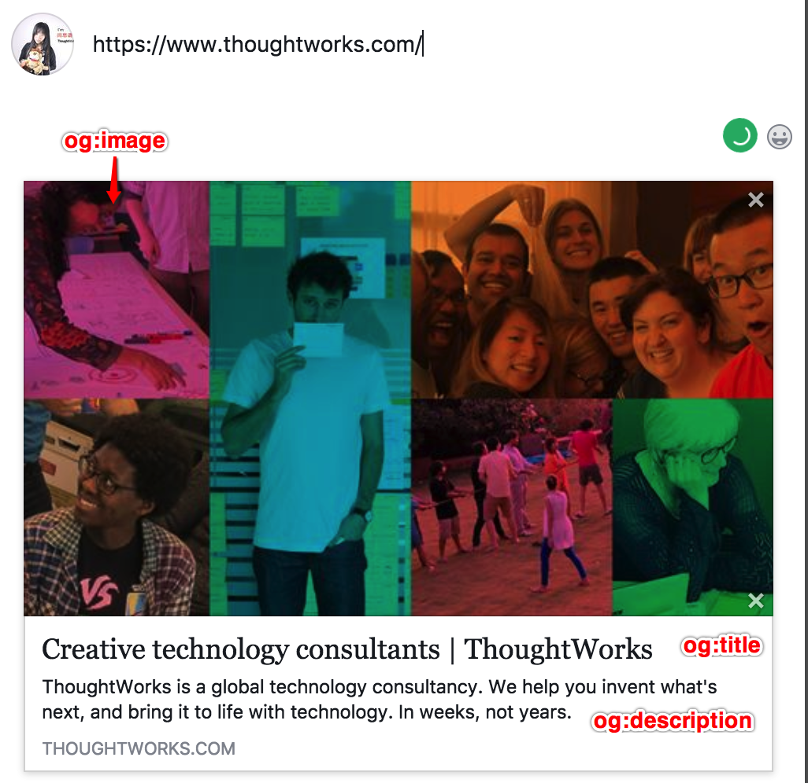
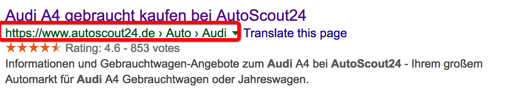
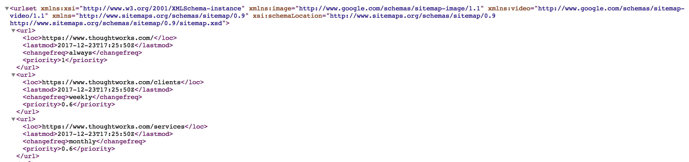
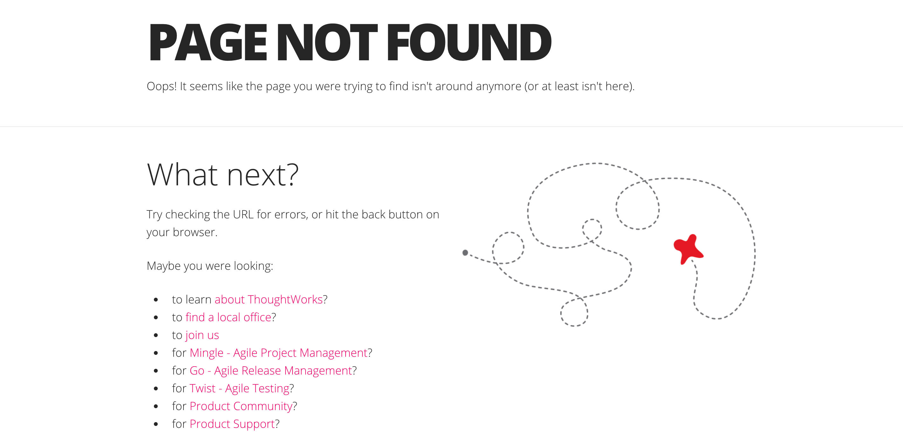

搜索引擎优化
随着越来越多的人使用搜索引擎(如：百度，google)作为在互联网上获得信息的最主要的方式，搜索引擎优化（Search engine optimization）显得越来越重要，让网站在搜索引擎上有更好的表现，有利于提高网站排名和网站访问流量。
搜索引擎工作过程

- 爬取：搜索引擎的爬虫（spider）通过跟踪链接访问页面，获取页面HTML代码存入数据库。
- 预处理：从抓取到的HTML文件中去除标签、程序，提取出可以用于排名处理的网页面文字内容。
- 排名：用户输入关键字后，排名调用索引库数据，计算相关性，然后按一定格式生成搜索结果页面并显示给客户。
搜索引擎优化方式
搜索引擎优化（英语：search engine optimization，缩写为SEO），是一种通过了解搜索引擎的运作规则来调整网站，以及提高目的网站在有关搜索引擎内排名的方式（来自维基百科）。
具体来说是对网站结构、网页文字语言和站点间的互动外交策略等进行合理规划部署来发掘网站的最大潜力的技术。使其在不损害用户体验的情况下提升搜索引擎排名，提高网站访问量，最终提升网站的销售能力或宣传能力。
以下介绍几种典型的优化方式：
内部优化
META Tag优化：META是网站HTML的元数据，META Tag通常不是给用户看的，而是用于描述网页信息，以方便浏览器，搜索引擎等使用网页。META中包括TITLE，KEYWORDS，DESCRIPTION等Tag。
title标签用于描述网页的主题。设定此标签有利于搜索引擎识别网站主题信息，如下例（我司官网）：
<title> ThoughtWorks | Creative technology consultants | ThoughtWorks</title>description标签对网页进行总结性描述。title标签可能是由一些单词和短语组成，而description标签通常是由一两个语句或段落组成的。如果description标签里的某个词语恰好出现在用户的查询里，那么这个词语将被高亮显示，该标签写的好则可提升页面的点击率。如下例：
<meta content="We're a global technology consultancy. We help you invent what's next, and bring it to life with technology. In weeks, not years." name="description" />og tags：og是一种新的HTTP头部标记（即Open Graph Protocol：开放内容协议），用来标注页面的一套Meta tags的规格，将网页链接解析为富文本对象格式，以方便在社交平台间分享，如下图所示。

原有的meta信息优化手段也同样适用于og tags，下面列出最主要的几种og tags：
<meta content="Creative technology consultants | ThoughtWorks" property="og:title">
<meta content="ThoughtWorks is a global technology consultancy. We help you invent what's next, and bring it to life with technology. In weeks, not years." property="og:description">
<meta content="https://dynamic.webteam.thoughtworks.com/homepage/social_image-fddb59ff7d1003cb5c58a951b94618bb.jpeg" property="og:image">
结构化数据：使用结构化数据可以帮助搜索引擎更加容易理解网站页面的内容。
schema.org组织选择了RDFa, Microdata and JSON-LD等网页制作标记语言规范，搜索引擎可以更加顺利解析网页内容。如下例（AutoScout24.at搜索某车型时）可以容易的解析到该车型评分Rating等信息。如何定义结构化数据可以选择遵循schema.org规范。{ "@context": "http://schema.org", "@type": "Car", "aggregateRating": { "@type": "AggregateRating", "ratingValue": "4.7", "bestRating": "5", "ratingCount": "629" }, "name": "Audi A3", "manufacturer": "Audi", "model": "A3" }
同时Google还提供了一款不错的测试工具：结构化数据测试工具
内部链接的优化，包括锚文本链接，各导航链接及图片链接。
导航链接（如面包屑breadcrumb)优化，面包屑导航是指在网页顶端或者底部放置的一排内部链接，能帮助用户快速定位和跳转回到上一层结构中的网页或者主页，有利于用户体验(UEO)和搜索引擎(SEO)，如下例（AS24某车型搜索）。breadcrumb实现方式很多，其中可以选用上面的结构化数据构建方式。

锚文本是链接上可以被点击的文字，通常放在锚标记a标签中间，锚文本主要作用是描述链接页面的一些情况，锚文本写得越好，用户浏览网站就越容易，搜索引擎也能更容易地理解链接到的页面内容。
图片链接优化主要就是通过title与alt里的关键词来为搜索引擎传递链接含义。图片的优化对于网站页面来说也非常重要，优化图片的alt属性可以使得图片搜索引擎能更好地理解图片。
<img alt="ThoughtWorks" id="tw-logo" src="/imgs/tw-logo.png" title="ThoughtWorks" />
内容优化：抢占更多有效、安全的关键词，避免过度重视通用词，这一点更多的与网站文案和领域有关。
URL地址优化，为网站上的文件创建具有良好描述性的分类名和文件名，可以更好地组织网站结构，并有助于搜索引擎更有效地抓取文件。虽然搜索引擎能够抓取复杂的URL，但提供相对简单的URL，对于用户和搜索引擎来说都是有帮助的。
网站地图（Sitemap）优化，网站地图是网站上用于展示网站结构的网页, 将网站上所有网页以层级式列表的方式提供给用户。当用户在寻找某些页面时遇到了困难, 可能会通过网站地图来解决。同时网站地图也让搜索引擎了解网站内容架构，搜索引擎网络检索器 (例如 Googlebot) 会读取这个地图信息。地图的存在不仅方便用户, 也同时利于搜索引擎对整个网站页面更全面地抓取。如下例我司官网Sitemap

关于Sitemap的测试，可以使用该Sitemap测试工具
robots.txt文件优化，robots.txt是一个存放于网站根目录下的纯文本文件，当搜索引擎的爬虫来抓取网站的時候，首先就是访问该文件。所以网站的该文件中会声明哪些是可以被搜索引擎索引，哪些是不应被索引，或者只允许收录等内容。如:我司官网robots。
404错误页面建立：通常404页面会使网站做得更加友好，并挽留即将消失的用户流量。一般情况404页面起码要留一个返回到网站首页的连接，也可以包括一些温馨的提示，也可以推荐的同类内容等。一个好的自定义404网页还可以帮助用户找到所需信息、提供其他实用内容及吸引用户进一步浏览用户的网站。如下例我司官网404页面：

外部优化
外部优化包括优化从别的网站导入到自己网站的链接。在符合功能需求的前提下，尽量增加外部链接使排名稳定提升。
- 第三方网站提交：可以提供功能让用户在第三方网站转发和发布本网站的链接，如各大社交网站等。
- 友情链接：与一些和网站相关性比较高，整体质量比较好的网站交换友情链接，巩固稳定网站排名。
结语
当然，对网站进行搜索引擎优化的代价也是不小的，就像功能的设计永远很难实现出最完美的解决方案一样，SEO的需求也一样，这时候团队就会更多的考虑如何平衡投入产出比，一般来说会考虑Anaystic里面真实的用户数据，对于访问量更大的页面也会优化做的更多一些。
那恰巧我工作的项目客户对于搜索引擎优化十分看重，身为组内的QA，除了对基本功能的检查外，对于SEO的需求也要负起责任来。其实对于SEO的了解还处于初级阶段，只是项目需求导致需要了解一些SEO的需求，那么一般客户方也会有真正的SEO团队提供这样的需求，他们也是有着非常丰富的经验，当然我们这边的团队完成他们给出的SEO需求外也要花更多心思了解为什么这些方式可以真正达到搜索引擎优化，同时也可以对于客户漏掉或者没提到的需求进行补充。
当然可选择的优化方式有很多，然而真正的搜索引擎优化是协助搜索引擎，而不是欺骗搜索引擎。我们能做的就是对网站进行合理优化，为网站提供自我营销解决方案，从而帮助客户网站提升搜索排名。